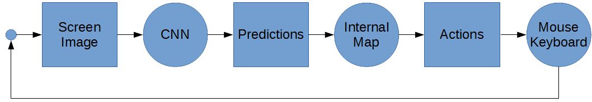
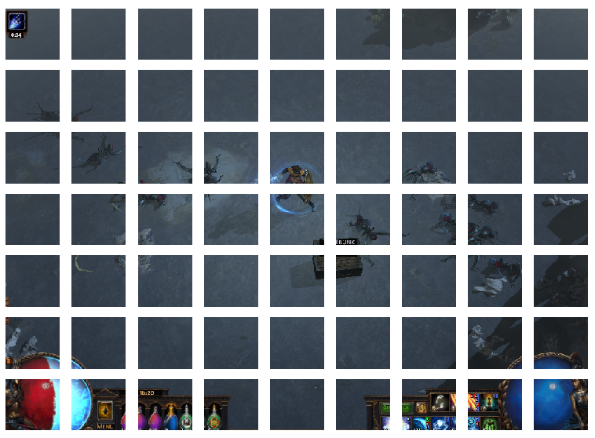
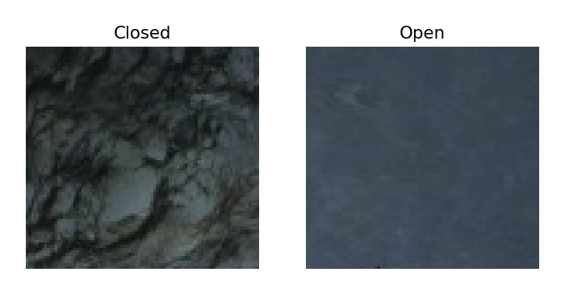
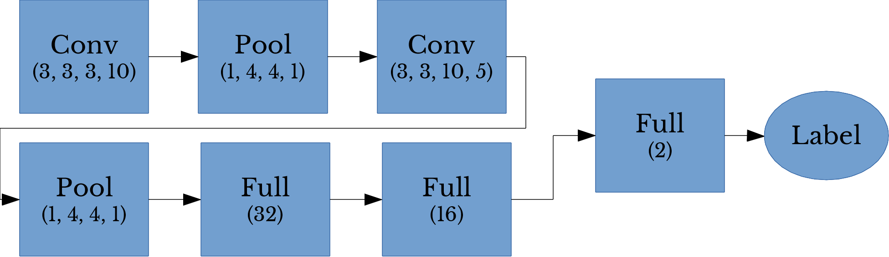

PoE AI Part 5: Real-Time Obstacle and Enemy Detection using CNNs in TensorFlow
Sat, 26 Aug 2017
Ai, Computer Science, Data Science, Deep Learning, Gaming, Machine Learning, Path Of Exile
This post is the fifth part of a series on creating an AI for the game Path of Exile © (PoE).
- A Deep Learning Based AI for Path of Exile: A Series
- Calibrating a Projection Matrix for Path of Exile
- PoE AI Part 3: Movement and Navigation
- PoE AI Part 4: Real-Time Screen Capture and Plumbing
- AI Plays Path of Exile Part 5: Real-Time Obstacle and Enemy Detection using CNNs in TensorFlow
As discussed in the first post of this series, the AI program takes a screenshot of the game and uses it to form predictions that are then used to update its internal state. In this post, methods for classifying and organizing information from visual input of the game screen is discussed. I have made the source code for this project
available on my GitHub. Enjoy!
Architecture of the Classification System

Figure 1: Flowchart of AI Logic
Recall from part 3 that the movement map maintains a dictionary of 3D points to labels. For example, at a given time, the bot might have the data shown in Table 1 in its internal map.
| World Point | Projected Point |
|---|
| \((0,0,0)\) | Open |
| \((1,0,0)\) | Open |
| \((0,-1,0)\) | Obstacle |
| \((1,1,0)\) | Obstacle |
| \((-1,-1,0)\) | Open |
Table 1: The Internal Map
Also recall from part 2 that the projection map class allows for any pixel on the screen to be mapped to a 3D coordinate (assuming the player is always on the
xy plane. This 3D coordinate is then quantized to some arbitrary precision so that the AI's map of the world consists of an evenly spaced grid of points.
Thus, all that is needed is a method which can identify if a given pixel on the screen is part of an obstacle, enemy, item, etc. This task is, in essence, object detection. Real-time object detection is a difficult and computationally expensive problem. A simplified scheme which allows for a good trade-off between performance and accuracy is presented.
To simplify the object detection task, the game screen is divided up into equally sized rectangular regions. For a resolution of 800 by 600, a grid consisting of \(m = 7\) rows and \(n = 9\) columns is chosen. Twelve, four, and four pixels are removed from the bottom, left, and right edge of the screen so that the resulting sizes (792 and 588) are divisible by 9 and 7 respectively. Thus, each rectangle in the grid of the screen has a width and height of 88 and 84 pixels respectively. Figure 2 shows an image of the game screen divided using the above scheme.

Figure 2: Division of the Game Screen
One convolutional neural network (CNN) is used to classify if a cell on the screen contains an obstacle or is open. An obstacle means that there is something occupying the cell such that the player cannot stand there (for instance a boulder). Examples of open and closed cells are shown in Figure 3.

Figure 3: Labeling of Image Cells
A second CNN is used to identify items and enemies. Given a cell on the screen the CNN classifies the cell as either containing an enemy, an item, or nothing.
In order to only target living enemies a third CNN is used as a binary classifier for movement. Given a cell on the screen, the 3rd CNN determines if movement is occurring in the cell. Only cells that contain movement are passed into the second CNN. This CNN then predicts if these cells contain either items or enemies. Items labels are detected as movement by toggling item highlighting in successive screenshots.
Image data for movement detection is created by taking 2 images of the screen in rapid succession and only preserving the regions in the images that are significantly different. This is implemented using the
numpy.where function (16 is chosen arbitrarily).
I1 = #... Image 1
I2 = #... Image 2
R = np.where(np.abs(I1 - I2) >= 16, I2, 0)
To summarize, screenshots are captured from the game screen and input to each of the 3 CNNs. The first CNN detects obstacles in the screen cells. The 3D grid points within each cell on the screen are then labeled accordingly in the movement map. The internal map keeps a tally of the predictions for each cell and reports the most frequent prediction class when a cell is queried. The second and third CNNs are used in conjunction to detect enemies and items.
The Dataset
Using screenshots taken with the
ScreenViewer class, a training data set is manually constructed. Currently, the dataset only consists of data from the level
Dried Lake in act 4 of the game. The dataset consists of over 14,000 files across 11 folders and is roughly 164MB in size. Screenshots of the dataset are shown in Figure 4.
Figure 4: The Training Dataset
In the dataset, images in
Closed are cells containing obstacles. The first CNN uses the folders
Closed,
Open, and
Enemy. The second CNN uses the folders
Open,
Enemy, and
Item. The third CNN uses the folders
Move and
NoMove.
Training
A somewhat modest CNN architecture is employed for the AI; two sequences of convolutional and pooling layers are followed by 3 fully-connected layers. The architecture is shown below in Figure 5.

Figure 5: CNN Architecture
Cross-validation accuracy in the mid to high 90s is acheived in roughly 20 to 30 epochs through the entire dataset. Epochs are performed by randomly sampling batches of size 32 from the training data until the appropriate number of samples are drawn. Training on a NVidia GTX 970 takes roughly 5 to 10 minutes.
Using Concurrency for Better Performance
To improve the performance of the AI, the CNN detection is performed concurrently. This allows for a speed-up as numpy and TensorFlow code avoids the
global interpreter lock issue from which normal Python code suffers. Code to launch the classification thread for enemy targeting follows.
#Gets a current list of enemy positions in a thread safe manner
def GetEnemyPositions(self):
self.tlMut.acquire()
lut = self.tlut #Last update time for enemy cell positions
rv = self.ecp[:] #Make copy of current list to prevent race conditions
self.tlMut.release()
if self.tllct == lut:
return [] #No update since last time
self.tllct = lut #Note time for current results
return rv
def StartTargetLoop(self):
self.ctl = True
thrd = Thread(target = self.TargetLoop)
thrd.start()
return True
def TargetLoop(self):
while self.ctl: #Loop while continue targeting loop flag is set
self.ts.DetectMovement(self.GetScreenDifference()) #Find cells that have movement
self.ts.ClassifyDInput(self.sv.GetScreen()) #Determine which cells contain enemies or items
tecp = self.ts.EnemyPositionsToTargets() #Obtain target locations
self.tlMut.acquire()
self.ecp = tecp #Update shared enemy position list
self.tlut = time.time() #Update time
self.tlMut.release()
time.sleep(Bot.ENT_WT)
def StopTargetLoop(self):
self.ctl = False #Turn off continue targeting loop flag
Figure 6: Thread Logical Organization
Thus, classification is performed concurrently and data members containing the predictions are provided to the main thread in a thread-safe manner using mutex locks. Figure 6 illustrates the logical organization of the threads and mutex locks. In the figure,
ecp and
pct are the data members of the
Bot class that contain the enemy cell positions and predicted cell types respectively.
The Result
The following video summarizes the project and contains over four minutes of the AI playing Path of Exile.
Figure 7: PoE AI Footage
More footage of the latest version of the bot is available on
my YouTube channel.
{kind=link}
{kind=link}
{kind=link}
{kind=link}
{kind=link}
{kind=link}
{kind=link}
{kind=link}
{kind=link}